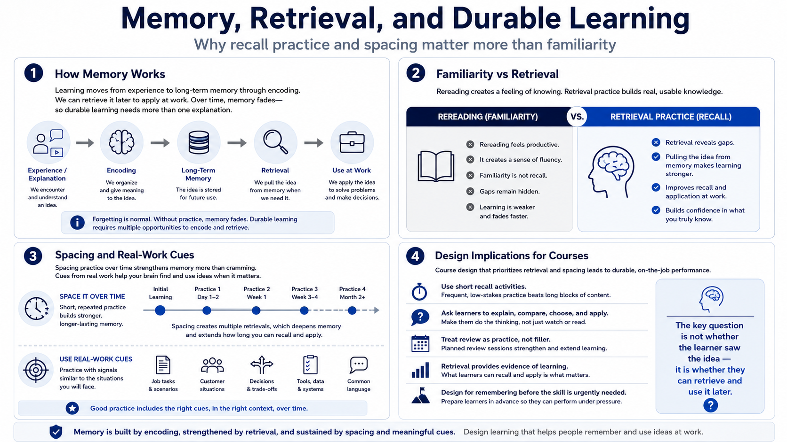

Memory, Retrieval, and Spacing
Connecting to LMS... Progress: in progress

Narration
Memory is easier to understand when we connect it to work. Short-term memory helps us hold something briefly. Long-term memory lets us keep knowledge, patterns, and procedures available beyond the moment. Encoding is the process of forming memory in the first place. Retrieval is the act of bringing information back when we need it. Forgetting is normal, which means durable learning needs more than a single clean explanation.
Rereading can feel productive because the material becomes familiar while it is in front of us. That feeling can be misleading. Familiarity is not the same as being able to recall the idea tomorrow or apply it under pressure. Retrieval practice strengthens learning because the learner has to pull the idea back from memory, not merely recognize it on the page. Even short recall activities can reveal what is clear, what is missing, and what needs another example.
Spacing improves durability by revisiting material across time instead of concentrating all practice in one sitting. Cues also matter. People remember and apply ideas more reliably when practice includes the kinds of signals they will encounter in real work. A well-designed learning experience gives learners repeated chances to recall, explain, choose, and apply. It prepares them to remember before the skill is needed, not after the work has already become urgent.
For course design, this means review should not be treated as filler. A brief pause to recall the main idea, compare two cases, or explain the next step can be more valuable than another page of information. Retrieval gives the learner and the designer evidence. It shows whether the idea is available without the answer sitting directly in front of the learner.